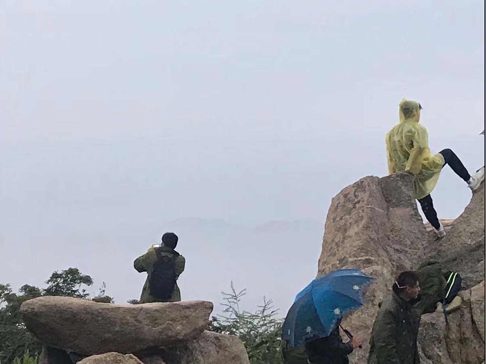
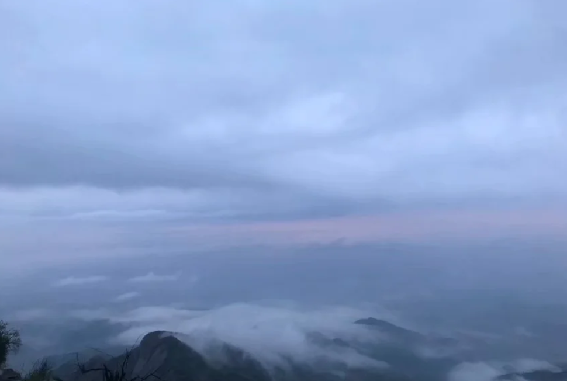

About_yesterday - Thu, Aug 27, 2020
欢迎阅读About_yesterday
I chose this essay as my topic, because it’s just too charming for me , the author is so familiar to the words that he can easily make his memory emerge into my sight with vivid and subtle sentences.
As to the questions casted, my answer and analysis will orient towards directions as follows: 1. the landscape plainly implicate the changes caused by time. 2. the landscape also reinforce the fine sentiment beneath the prosaic words. 3. the landscape also help to make the line clear for author to draw his final philosophical conclusion.
Author emphasizes more than one times that everything seems be forgotten by time. However, he also talks a few times something has changed. such as “It was the arrive of (dragon)flies that convinced me beyond any doubt that everything was it always had been.” By this way, I am impressed more that time leaves a lot trace about his steps.
People always say time passes so fast, while indeed it’s them who go that fast. I came from a little county, which was too big for me to explore as a child. As of now, It’s just too small to wander with my rich idleness. I still wander randomly after dinner, the scenario keeps the way it was years ago, the same bare hills, the same pedestrians with the same slowness. difference is me, there are now too many burdens in my mind as the gift of growing-up. I always thought about my vague future when wandering, it just put me in agony. and it’s when the night breeze gave me a gentle embrace, and dragged me out of those meaningless thoughts. then I would take a delicate look at my round, the trace of time was just beneath the crimson of peony which had some drops of yesterday’s rain attached. just like a boy who had vowed to be a hero, while time rush on, he was in his bloom and with some slight confusion. As to his dream, it had been buried deeply under the indifferent time without any drops remaining.
Back to the essay, EB White also used landscape to express his exquisite sentiment. such as when he describe his fishing with his son, I can sense his dislocation and missing for the past.
I have been to ten more mountains yet, and there was a suffering period for me when I decided to start my climbing. I failed in a basic course for I had mistaken the exam time and got a heavy blow for a long time. then one day I decided I should do something instead of unceasing pessimism. So I just set up towards mountain Tai. To be honest mountain Tai is not a good alternative for a green hand — which I would learn quickly when I began my first step on mountain Tai. One may can image to climb up several ladders, but I bet that several can never mean about 7000 that many, not to mention I finished it at a lonely and boring hot night. the belief held me is to see the sunrise, as showering in hilltop sunshine means redemption to me. finally, before the limitless ladders knocked the last strength from my legs, I reached the top. It’s too cold, I got only a purple thin one-time raincoat against the freezing blow mixed up with haze mist. And a brief rain ruined my reverie of sunrise.
It’s of more torture to get down the mountain. However I got a strange sensation that my body seemed to be in another world remote from me where no strain can touch me. and for the time, having recalled the thin sea of clouds I had seen(it formed because of the rain), I felt all is well. it’s also of a lot of luck to encounter the sea of clouds in stead of sunrise.
Then I found it so funny to think about the word ‘redemption’, the scenario was just a container to accept my emotion, if I saw something after my struggle, why should I take it as a failure.
And I was addicted to this delight from then on. the next time I saw sea of clouds is on Mountain Heng, I met some strangers, and together with them, endured a heavy rain. as a reward, the sea of clouds is the most gorgeous one I had ever seen. it felt like milk in the shape of fog ran eternally, or a fleet of horsemen charged but slowly. It’s the immense delight and unforgettable experience beneath the scenario that made this memory a treasure.
The final point I want to illustrate is that different landscape help author to make his philosophical conclusion easier to comprehend. it’s coded in human DNA that one can gain some truth from concrete things than abstract things. so it’s nature to draw conclusion on basis of those landscape description as well as those follows.
I will try to explain a plain conclusion through my experience(sorry for I can’t go with a deep one with my limited ability). And this story is a little heavy because it talks about death.
There was a period when I thought myself in great pressure so that was always tormented by nightmares, half asleep half awake and lost control of my body for several minutes with my consciousness intensely sharp. Then one day it broke out–I can’t fall asleep even at 2 O’clock, and I got a message in which claimed my uncle’s death. It felt like a thunder straightly stunned at my deep soul.
Then came a crazy decision after several hopeless days , I, with my several exams nearby, decided to climb Mountain Hua. Despite the long ride, I arrived at the feet of this high challenge. with sorrow, I aimed at every discouraging slope or ladder next. Mountain hua was full of people then(in fact, always), excited ones, downhearted ones, ambitious ones.
I expected for nothing, and didn’t know what to expect, I whispered to myself: just go ahead, your uncle is with you. and I had no idea when the sorrow around me melted. maybe when I sunk myself in the rope ladder, maybe when I saw the sunrise at the top for the first time in my life. Hazy sunrise hid behind vague thin clouds, deepened dawn expected faltering rays, it’s for just a few moments when the golden line added itself to a pale circle which would light up the whole sky soon. Most of climbers would go away after recording the whole process, so I could have a complete view about this newborn sun, which I had expected from the first climbing, and finally got attained at an aimless climbing.
The funny word ‘Redemption’ sprung in my mind again, I felt powerful, and went down the mountain with minimum effort. This is an unique experience as well, and made me think more about what we can gain and retain, less about what we lost already. There are moments in life when we miss something so much that we just want to pick them from dreams and hug them for real. However, after that fanciful ideas, we need to learn how to accept and how to enjoy what we will encounter when unconscious.
Nightmare dashes to its end, coming is feeble dawn, flabby as it is , bright as well.
All above is my essay, with simple and few words analysis the problems, and clumsy imitation to share some of my experience. In fact, landscape can be more than what it truly offers to, it can also be the scene we meet right now in our life. it may be some small delight: loose hair embraced by comfortable breeze. it may be a narrowed upset alternative: Attend Graduate or Access Work. No matter what it is, we are experiencing, and finally the emotion behind all of those will spark in different color amid our unconscious beings through the darkest corner.
附录
pictures I’d like to share about the three experience.

